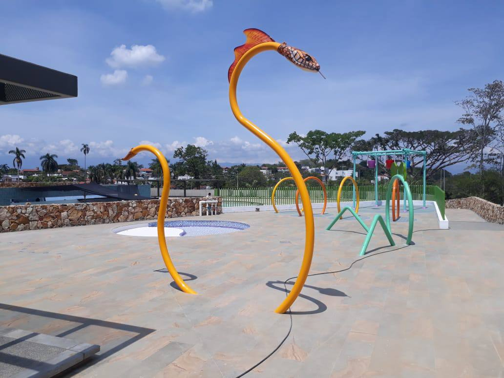

La estadística de accidentes por ahogamiento principalmente de niños es motivo de preocupación, razón por la cual nos debe llamar la atención a mejorar la oferta recreativa con agua.
La recreación como derecho fundamental desarrolla en los niños habilidades para interrelacionarse con sus congéneres, crea en ellos competencias ciudadanas haciendo que la creatividad aparezca permanentemente para dejar salir todas las fantasías que deseen construir.

El equipo de profesionales está dispuesto para diseñar y construir parques a la medida donde se puede representar la cultura de la región o recrear algún tema específico, por ejemplo, arriería, guaduales, etc. Desde luego, se puede hacer una selección de los juegos que ya existen en el portafolio y diseñar su parque.